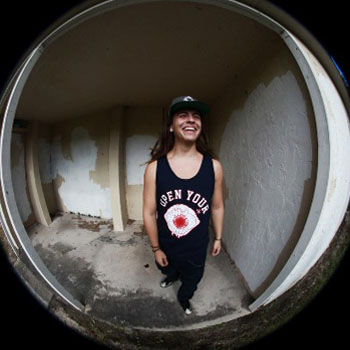

Vintage Stereon is a Miami based street wear brand that was created by Brandon Morris, Kevin Oboh, Jonathan Desrosiers, Jacinth Lattiboudeaire, Hamilton Troy Chattoo, and JuLien Flores back in 2006. We are heavily influenced by things of the past, such as Art , Music and a assortment of different trends and fashions. The reason why we decided to use the word vintage in our name is because the word ” Vintage ” is classic and everlasting. The word Stereon refers to our childhood at a time when we had no direction but all the inspiration in the world. Our style is unique and unpredictable and you can even say our clothing brand is like a time table. We change our style in every collection and try to apply what we know and researched about that era. We can be a little 90′s in one collection and in the next, get inspired by the 60′s. For example, our Huey Newton and Tie Dye Shirt in our latest collection entitled ” Magnum Opus”(The Great Work), came directly from the sixties where the Black Panthers were a nationally prominent force and well known for their notorious actions, where-as Tye-dye being a prominent force in fashion and expression at the same time. We put much thought and focus into our work and we want to educate our audience in a way that is appealing to the public but very informational to the consumer. Vintage Stereon is timeless just like fashion.This brand is heavily inspired by music as well and the way the music industry would market an album or their next video, we would do, but with clothing and visuals.
BlackGrapes all together is the individual, BlackGrapes is YOU! And one who rocks BlackGrapes will understand that they are wearing something that represents who they are, what they've been through, and what they're trying to achieve!BlackGrapes does not want to be the typical street wear. We would like to grow by going against the grain, and pushing to showcase individuals ability to overcome all odds. We want to touch and relate to our supporters in more of a personal level. We have the same belief in our clothing line, that with age and processing, BlackGrapes will turn into something that people can appreciate. Company Overview We are a team who are passionate about giving back by the message we are trying to push behind our line. We portray the stories that an individual goes through in life showing the negative side (Black) of what they go through, and then portray the positive results that come out from it (BlackGrapes). Black is considered the color of emptiness, the unknown, fear, the pain and suffering. We wear Black when we mourn, the color of the saddest moment of our life. Black also represents sophistication, the beauty, the class, the age of maturity, and a symbol of accomplishment. Black is the theme for the most elegant Black Tie party events. Black cap and gown is worn during graduations, a life accomplishment defined in Black. A Black Belt is the highest rank in martial arts, given to individuals who’ve mastered the technique. Grapes signifies the process to become something better than expected. Grapes can be processed and become anything from jelly to juice. But with careful processing, age, and environment, the same Grapes can be bottled into wine, which is a product that many people appreciate.
| 40oz | Dimepiece | Black Grapes |